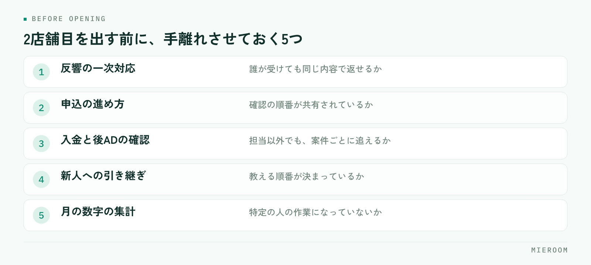

売上が安定してきたので、そろそろ2店舗目を。賃貸仲介の店舗運営でこの話が出るのは、たいてい繁忙期が終わった直後です。ただ、2店舗目を出すかどうかを決めるのは売上の大きさではなく、1店舗目が「自分がいなくても回る状態」になっているかどうかです。
この記事の結論
2店舗目の判断で見るのは、売上ではなく粗利の厚みと、1店舗目で取りきれていない反響があるかどうかです。そのうえで、1店舗目が店長不在でも回る状態になっているかを確かめます。順番を逆にすると、2店舗出して両方が薄くなります。
売上が伸びたから、は出店の理由にならない
売上が過去最高だった月の直後は、出店の判断がいちばん甘くなります。繁忙期の売上には、その時期だけの反響と、掲載費を増やした分が混ざっているためです。
見るのは年間の粗利です。売上から掲載費や広告費などの変動費を引き、さらに家賃や人件費といった固定費を引いて、年間で手元に残った額を確認します。2店舗目は開店してから数か月は赤字で回る前提で考える必要があるため、その期間を1店舗目の粗利で支えられるかが判断の土台になります。
粗利の出し方そのものが曖昧な場合は、出店の検討より先にそこを整えてください。考え方は店舗の損益の見方にまとめています。
取りきれていない反響があるか
2店舗目が成り立つかどうかの、もうひとつの材料が反響です。見るのは反響の総数ではなく、今の店舗で取りきれていない反響があるかどうかです。
確認するのは次の点です。
- 反響に当日返せていない件数が、月のうちどれくらいあるか
- 来店の予約枠が埋まって断った件数があるか
- 商圏の外から来る反響が、継続的にあるか
- 既存スタッフの手が、繁忙期以外も埋まっているか
取りきれていない反響が常にあるなら、店舗を増やして受け皿を作る意味があります。一方で、反響そのものが足りていない状態で店舗を増やすと、同じ反響を2店舗で分けるだけになります。
とくに注意したいのは、閑散期の数字です。繁忙期だけ手が足りない状態は、人員のやりくりやシフトで解ける問題で、出店の理由にはなりません。
1店舗目が、店長不在でも回るかを確かめる
数字が足りていても、ここで止まる店舗が多くあります。2店舗目を出すと、今まで1店舗目にいた人が2店舗目に移るか、2店舗を行き来する形になります。つまり1店舗目は、今より薄い人数で回ることになります。
確かめるのは、次の状態になっているかどうかです。

反響の一次対応が、誰が受けても同じ内容で返せるか。申込の進め方が、確認の順番として共有されているか。入金と後ADの確認を、担当以外でも追えるか。新人が入ったときに教える順番が決まっているか。月の数字の集計が、特定の人の作業になっていないか。
ひとつでも「自分がやっている」状態なら、その業務を先に手離れさせるのが2店舗目の準備です。出店してから整えようとすると、2店舗分の問題が同時に出ます。
今の店を伸ばす場合と、2店舗目を出す場合
同じ投資を、今の店に入れる選択もあります。判断材料として並べておきます。
| 今の店を伸ばす | 2店舗目を出す | |
|---|---|---|
| 向く状況 | 反響はあるが取りきれていない。商圏内で伸ばせる余地がある | 商圏の外からの反響が継続している。人が育っている |
| 先に必要なもの | 掲載の見直し、接客の歩留まり改善、増員 | 任せられる人、業務の手順化、数か月分の資金 |
| 効果が出るまで | 比較的早い | 開店から数か月以上かかる前提 |
| 失敗したときの戻し方 | 掲載を絞る、体制を戻す | 固定費が残り、戻すのに時間がかかる |
| 主な負担 | 広告費と人件費 | 家賃、敷金、内装、人件費、システム |
迷っている段階なら、まず今の店で取りきれていない反響を取る側に投資したほうが、判断の材料も増えます。1店舗で歩留まりを上げた経験は、2店舗目でそのまま使えます。
人の手当てが先、物件は後
出店の検討は物件探しから始まりがちですが、順番は逆です。よい物件が出たから決めた、という進め方は、任せる人が決まっていない状態での開店につながります。
決める順番は、任せる人 → 必要な粗利の見通し → 商圏 → 物件です。任せる人が社内にいない場合は、採用して育てる期間を出店時期に含めて考えます。賃貸仲介は、入社してすぐ一人で接客から申込まで回せる仕事ではありません。
近い場所に出すと、物件情報や業者間のつながりを共用できる一方、同じ反響を2店舗で分けることになります。離した場所に出すと反響は重なりませんが、物件の情報も人の応援も共用しにくくなります。どちらが正しいということはなく、今の店舗の反響が商圏の中で足りているかどうかで決まります。
2店舗目を出した直後に起きること
開店後によく起きるのが、記録のばらつきです。1店舗目は今までの形で、2店舗目は新しい人が自分のやりやすい形で記録を付け始めます。
結果として、月末に店舗ごとの数字を並べたときに比較ができません。反響の数え方が違う、申込の記録の粒度が違う、売上の計上の時点が違う。この状態になると、どちらの店舗が利益を出しているのかが分からなくなります。
店舗ごとにExcelを分けて管理すると、集計のたびに突き合わせが必要になり、項目も少しずつずれていきます。開店前に、反響・申込・売上の記録の形をそろえておいてください。あとから統一するほうが手間がかかります。
店舗ごとの比較ができる状態であれば、掲載費の配分、人の配置、どちらの商圏に次を出すかといった判断が数字でできます。担当ごとの成績を店舗をまたいで見る方法はスタッフの成績管理を参考にしてください。
売上がどれくらいになったら2店舗目を考えてよいですか？
任せる人がいない場合、どうすればよいですか？
2店舗目は近い場所と離れた場所、どちらがよいですか？
まとめ：判断の順番を固定しておく
2店舗目の判断は、年間の粗利 → 取りきれていない反響 → 1店舗目が店長不在でも回るか → 任せる人 → 商圏 → 物件、という順番で見ます。売上の大きさや、よい物件が出たことを起点にすると、1店舗目まで薄くなります。
そして、出店が決まったら開店前に記録の形をそろえておく。ここだけは、あとから整えるほうが必ず手間がかかります。
ミエルームなら、反響から申込・契約・入金までを案件ごとに1行で記録でき、店舗ごと・担当ごとの成績と確定売上を同じ形で見られるので、2店舗目を出したあとに店舗別のExcelを突き合わせる作業が起きません。どちらの店舗にいても同じ画面で記録が残るため、店長が店舗を行き来する期間でも数字が途切れません。デモアカウントの発行やご相談は、この下のボタンからお気軽にどうぞ。